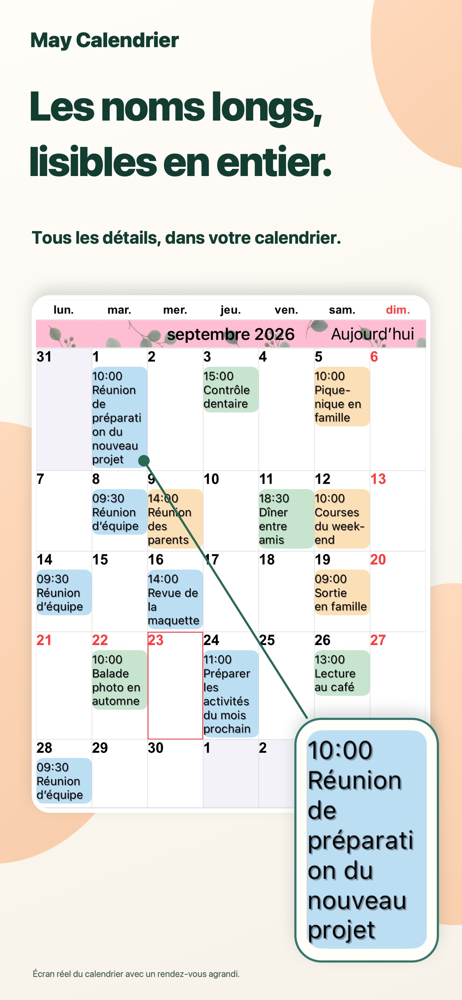
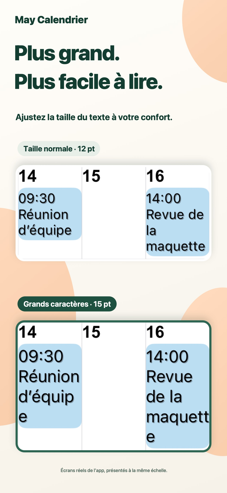
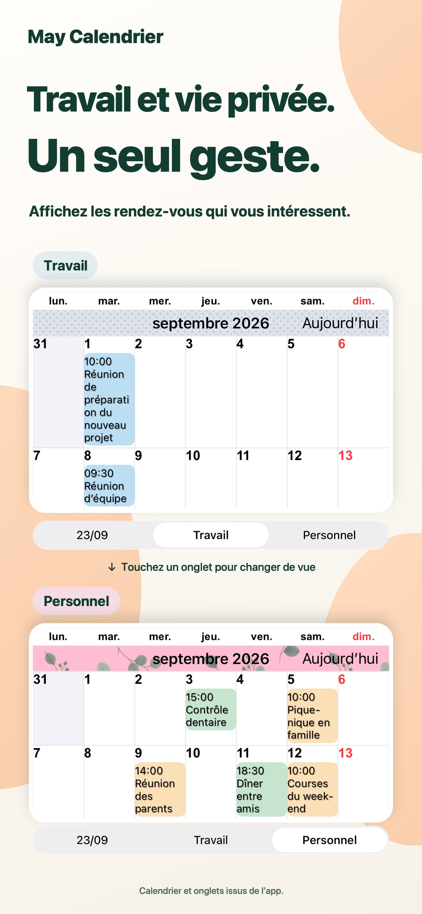
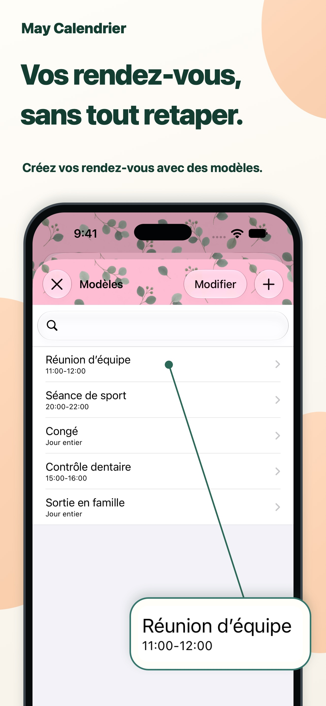

Un style à votre image.
Associez couleurs de thème, fonds et motifs pour créer votre calendrier.
Chaque journée, plus lisible.
Les titres longs restent lisibles dans la vue mensuelle. Des textes et des couleurs à votre goût, pour voir vos rendez-vous en un coup d’œil.
Pour iPhone et iPadVoir sur l’App StoreTéléchargement gratuit · Achats intégrés

Un peu plus de simplicité pour planifier.
Travail et vie personnelle, réunis au même endroit.PENSÉ POUR VOTRE QUOTIDIEN
Adaptez le calendrier à votre façon de vous organiser.
Les titres longs s’affichent sur plusieurs lignes. Ajustez la police et sa taille pour lire les détails tout en gardant une vue d’ensemble du mois.

Enregistrez des combinaisons de calendriers et passez du travail à votre vie personnelle d’un simple toucher.

Enregistrez réunions, sport et rendez-vous comme modèles. Touchez deux fois une date, puis choisissez un modèle pour ajouter un événement.

LES PETITS DÉTAILS COMPTENT.
Associez couleurs de thème, fonds et motifs pour créer votre calendrier.
Choisissez parmi 20 types de widgets, dont certains réservés à l’iPad.
Affichez uniquement les événements correspondant au texte saisi.
QUESTIONS ET RÉPONSES
Le téléchargement est gratuit et des achats intégrés sont proposés. Consultez l’App Store pour les tarifs et options actuels. Voir sur l’App Store
Oui, sur iPhone et iPad, avec certains widgets exclusifs à l’iPad. Consultez l’App Store pour les versions de système requises.
Elle prend en charge les rappels, jours fériés, numéros de semaine et informations du calendrier lunaire. Le début de semaine et le fuseau horaire sont réglables.
Elles sont envoyées par l’application Calendrier d’Apple. Vous pouvez programmer des alertes avant le début ou la fin d’un événement.
DES JOURNÉES PLUS LISIBLES.
Adoptez un calendrier qui vous correspond.